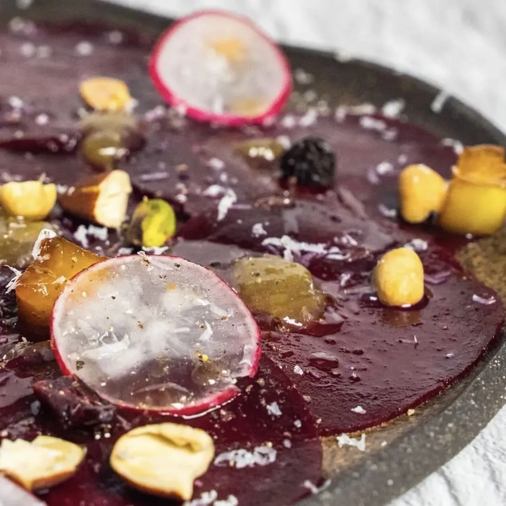

⏲ 10 minuts 👥 2 racions

Aquest cap de setmana us presentem una recepta de base vegetal, però amb tocs molt gormands. Es
tracta d’un carpaccio de remolatxa que amanirem i acompanyarem amb raves, compota de raïm i poma
caramel·litzada amb mantega. Un entrant fàcil i molt gustós, ideal per compartir a l’espera de
l’arribada del bon temps.
Ingredients:
- 2 remolatxes
- 2 raves
- 1 poma
- Un grapat de raïm
- 150g de sucre
- Un grapat de fruits secs
- Un raig de llimona
- Parmesà
- Mantega
- Oli, sal i pebre
- Amb l’ajuda d’una mandolina, laminem dues remolatxes i dos raves.
- Desfem 50 g de sucre en una paella. Quan estigui fet caramel, integrem uns daus de mantega i afegim una poma tallada a dauets. Reservem quan estigui caramel·litzada.
- En una cassola posem 100 g de raïm, 100 g de sucre i una mica d’aigua, i coem una estona fins que es desfaci. Triturem i reservem.
- Emplatem amb una base de làmines de remolatxa, puntes de la compota de raïm, dauets de poma caramel·litzats i làmines de rave. Escampem fruits secs al gust, un raig de llimona, oli, sal i pebre. També podem afegir una vinagreta, emulsionant vinagre, oli, suc de llimona i una mica de mel. Acabem amb una mica de parmesà.